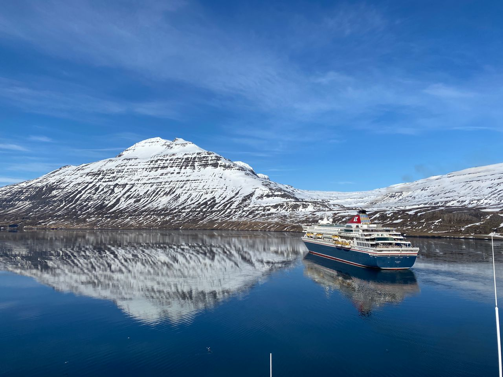
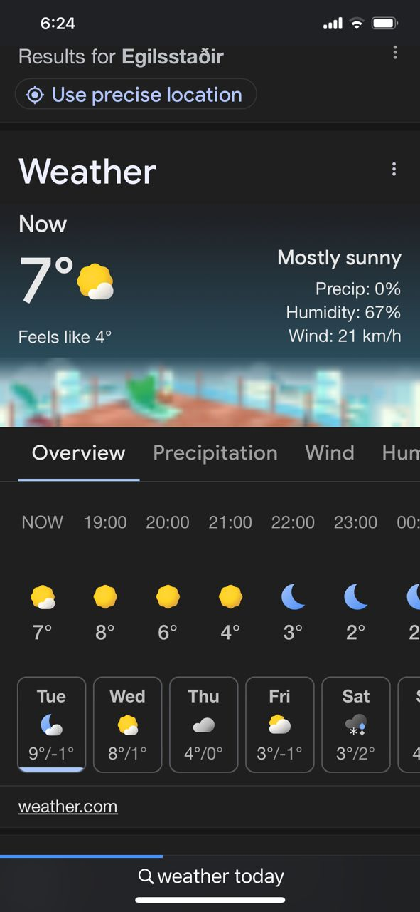
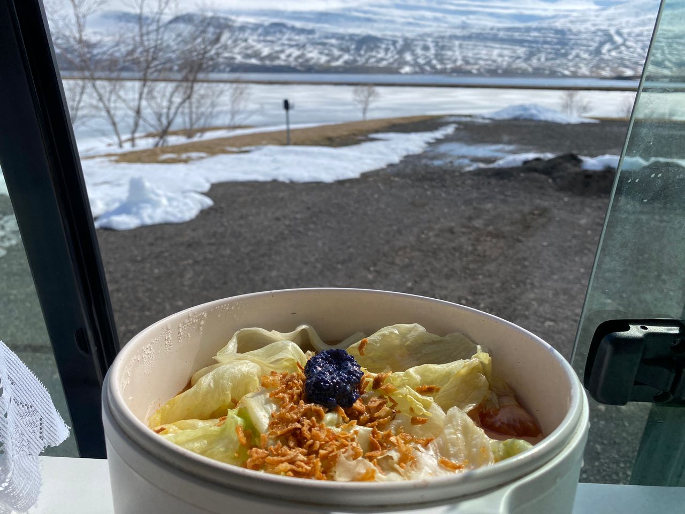

Real Story · 中文
在 Iceland，很 funny，随便拍都像 lockscreen。
到了 Iceland 后，我发现一件很 funny 的事： 你可以 take a lockscreen picture regardless how you take, where you take, when you take.
山、雪、海、天空、倒影， 全部都像手机 lockscreen。 很不真实，但又是真的在眼前。

First Driving in Iceland
I purposely chose this period.
这是我第一次在 Iceland driving。 我 purposely opt this period， because it was just the opening of the car ferry with a reasonable fare.
Road condition 也相对 safer， although Toyotaki was using M&S tyres. 所以我还是要很小心。 Iceland 的路很美，但不能因为美就放松。
Cold Body
Cold, but human body adapts very fast.
23 April，在 Egilsstaðir，天气大概 7°C，feels like 4°C。 很冷。
但是 human body is very easy to adapt。 后来在 Iceland 半个月后，当气温 reach 15°C， 我竟然觉得 very hot。 Lol，15 degree very hot。

Campsite Rule
24/4 overnight at Egilsstaðir Campsite.
23 April 2024，我 overnight at Egilsstaðir Campsite。 在 Iceland, campervan 不能随便 wild overnight。 要住 designated campsite，不然可能会被 fined。
所以 Iceland road life 不是看到哪里美就睡哪里。 它有自己的规则： 白天走很远，看很大的风景， 晚上还是要回到 campsite。
Tunnel Design
冰岛 6km 长的山下 tunnel 里的急救建筑设计。
24 April，我经过冰岛一个大概 6km 长的山下 tunnel。 里面有 emergency / rescue design。
这个细节我会记得。 因为在这种寒冷、偏远、山下的 tunnel 里面， safety design 不是 decoration。 它是真的为了在危险发生时，让人有机会被救。
Snow Wind and Fog
雪风和雾，driving must be careful.
在路上，我遇到 snow wind and fog。 这种路要小心谨慎一点驾车。
还需要 wear black spec， to avoid snow blind。 白雪、强光、雾气和长路放在一起， 眼睛和判断力都会很累。
Fáskrúðsfjörður
24/4 sleeping area at Fáskrúðsfjörður campsite.
24 April 2024，我停在 Fáskrúðsfjörður campsite sleeping area。 但是 campsite 在 winter 没有 operation， 所以 today consider free。
Iceland 的 campsite life 很特别。 有时它是正式 campsite， 有时是 winter silence 里面的一个 sleeping area。
Toyotaki Lunch
鱼子酱午餐面。
午餐是鱼子酱面。 坐在 Toyotaki 里面， 看着外面的雪、山、水和 campsite， 一碗简单的面也会变成 Iceland memory。

English Memory Summary
Iceland road life begins.
On 23 April 2024, Tuzi began road life in Iceland around Egilsstaðir. The scenery felt like a lockscreen from every angle, but driving required real caution: early-season roads, M&S tyres, snow glare, fog, wind, and cold.
She overnighted at Egilsstaðir Campsite on 23 April, following Iceland’s designated campsite rule. On 24 April, she continued toward Fáskrúðsfjörður, passed a long mountain tunnel with emergency design, met snow wind and fog on the road, and stayed at a campsite sleeping area that was not operating in winter, so it was considered free.
Heart Statement
Iceland is beautiful, but it asks you to stay awake.
Iceland gave me lockscreen views everywhere, but it also taught me to respect snow, light, fog, tyres, rules, and the quiet discipline of cold-road travel.